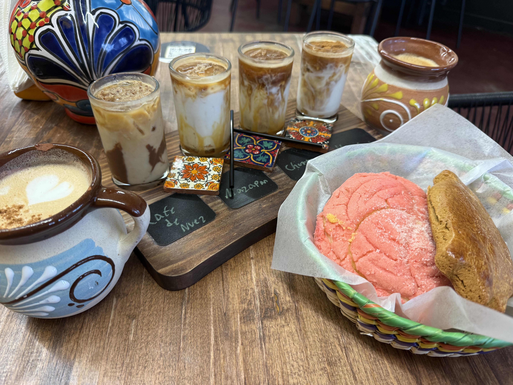

CAFE ES AMOR
Location:
2209 Central Ave NW
Albuquerque, NM

When I found out about the opening of this coffee shop I knew I had to try it, not just because I love conchas but because I heard of their coffee flights and I was hooked.
Ambiance
A very cute coffee shop with their adorable mugs shelved on their walls. It’s not a large space so probably not ideal for getting work done, but perfect to go enjoy their coffee flight and some food.
Price
Very reasonable prices for their drinks. I appreciate this because typically I am used to being charged for every extra syrup and add on, but here you can get a specialty drink for about $6. Not a bad deal. Their food is also very reasonably priced, and offers a large variety of breakfast meals, pastries, and desserts.
Coffee
Cafe es Amor is definitely the kind of coffee shop I go to when I need something sweet. They have a large range of specialty drinks, a lot of which I have been able to try due to their coffee flight that they offer (definitely recommend, super fun to try with a friend). Their drinks are pretty sweet, but I think that’s to be expected when ordering drinks named after different Mexican cookies and pastries.
And speaking of pastries, their conchas paired with a coffee is the way to go. The conchas were soft and fluffy, and just sweet enough.